The Battle of Neighborhoods - Top 10 Restaurants in 8 Boroughs of Toronto by Rating and Likes
Introduction
Toronto is the capital city of the Canadian province of Ontario. Its
current area is 630.20 𝑘𝑚2 (243.3 square mile). With a recorded
population of 2,731,571 in 2016, it is the most populous city in
Canada and the fourth most populous city in North America. Toronto is
a prominent centre for music, theatre, motion picture production, and
television production, and is home to the headquarters of Canada's
major national broadcast networks and media outlets. Its varied
cultural institutions, which include numerous museums and galleries,
festivals and public events, entertainment districts, national
historic sites, and sports activities, attract over 43 million
tourists each year.
If you're one of those 43 million tourists, you might have many
concerns when you visit Toronto. These concerns may include place to
go, eat, sleep, shop and so on.
This project aims to select top 10 restaurants in 8 boroughs(Downtown
Toronto, West Toronto, East Toronto, Central Toronto, North York,
Scarborough, East York, Etobicoke) of Toronto based on number of likes
and rating restaurants from Foursquare. Foursquare is a local
search-and-discovery mobile app developed by Foursquare Labs Inc. It
also has web app and API.
Data
Data To discover restaurants of concern, following data are used:
- Foursquare API : Forsquare API to get the most common restaurants of a given neighbourhood of a borough. It's in json format.
- Postal Code of Boroughs in Toronto : Postal code of neighbourhoods of a given borough in Toronto. This data can be obtained from wikipedia using Pandas. This data consist of Postal Code, Borough and Neighbourhood. It's in Tabular format.
- Neighbourhood Latitude and Longitude : Neighbourhood Latitude and Longitude of a given borough. Latitude and Longitude are used to obtain the most common restaurants in a given neighbourhood using Foursquare API. It can be found in Geospatial_Coordinates.csv. It's a csv file
Methodology
The target is to retrieve top 10 restaurants in 8 boroughs of Toronto. That are Downtown Toronto, West Toronto, East Toronto, Central Toronto, North York, Scarborough, East York and Etobicoke.
Technology Used
- Numpy: Scientific Computing libray for Python
- Pandas: Data manipulation and analysis
- Matplotlib: Visualization
- requests: API operations
- Nominatim: Convert location name to Latitude and Longitude
- folium: Visualize data on map
Data Extraction
First, I get postal codes in 8 boroughs of Toronto from
wikipedia page
using Pandas, and filter out not assigned column value. I use
Pandas to read geospatial goordinates of toronto from
Geospatial_Coordinates.csv. Then I join the postal codes with
geospatial goordinates.
Here is what we have so far:

After that, I use Foursquare API to explore venues in each
neighbourhood using latitude and longitude with the following
endpoind:
https://api.foursquare.com/v2/venues/explore?&client_id={}&client_secret={}&v={}&ll={},{}&radius={}&limit={}.
This is what we have get:
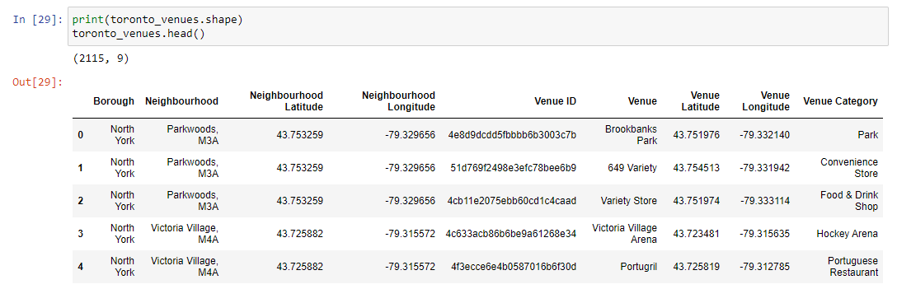
So now, let's filter the data to keep Venue Category that are
restaurants.
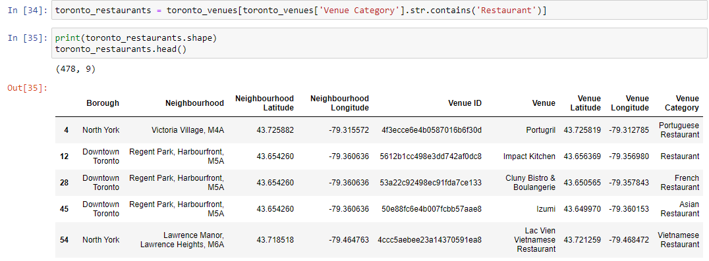
Next, let's use Venue ID for each restaurants to get their
details with the following endpoind:
https://api.foursquare.com/v2/venues/{}?&client_id={}&client_secret={}&v={}.
I choose following column: Venue ID, Address, Phone Number, Likes,
Rating, and Tips.
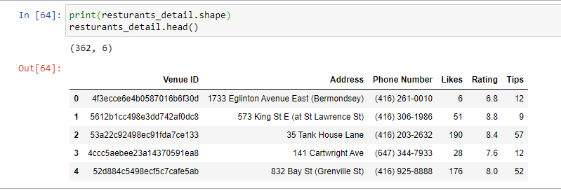
We have restaurants' detail. Let's merge restaurants with their
detail, base on Venue ID, to get information we need for restaurants
in each neighbourhood.
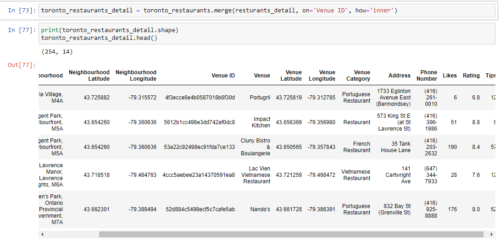
Finally, sort all restaurants in descending order and group them base on borough and take top 10 of them. 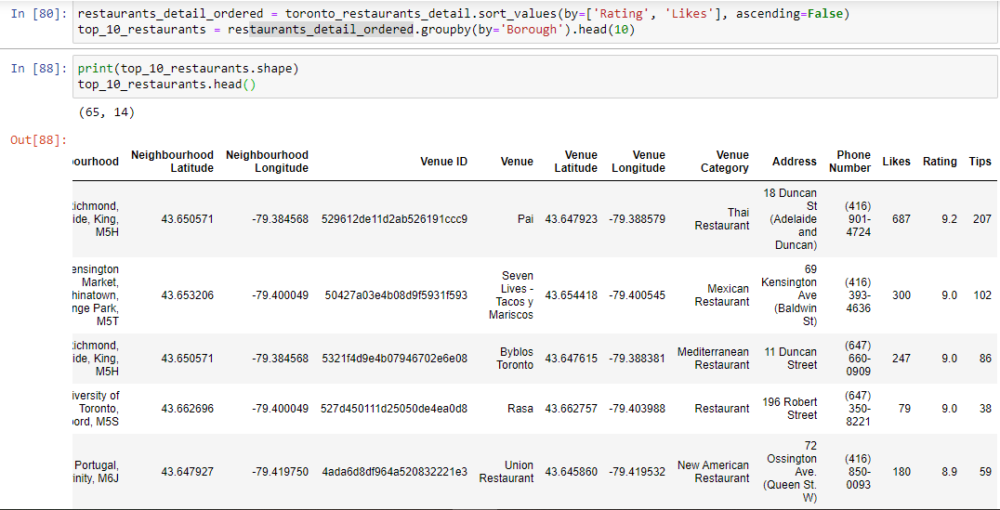
Results
There is one thing that is needed to point out. From 10 top restaurants above, there are just 65 restaurants. We have 8 boroughs, and we are interested top 10 restaurants in each borough. This means that, base on Foursquare API, some boroughs have less than 10 restaurants. When visualize results, I decide to call restaurants in boroughs with 10 or more restaurants top 10 restaurants. Beside this, let's just call them top restaurants.
I start with bar chart. After bar chart, I create a visualization for all top/top 10 restaurants on the map using Name, number of like and rating of a given restaurant as a pop-up.
Downtown Toronto
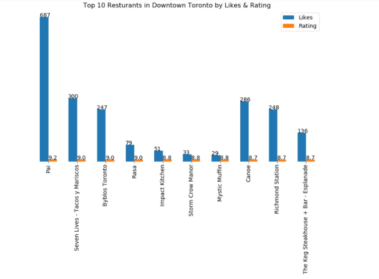
West Toronto
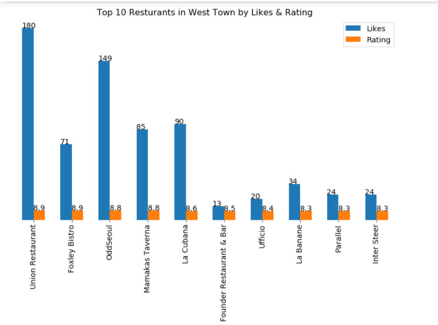
East Toronto
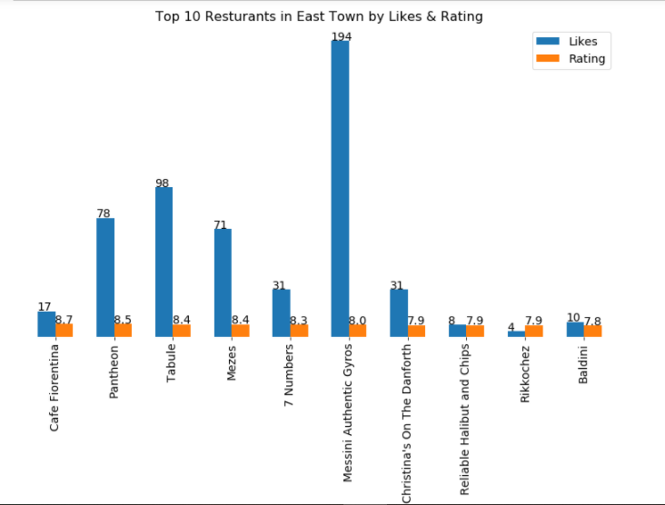
Central Toronto
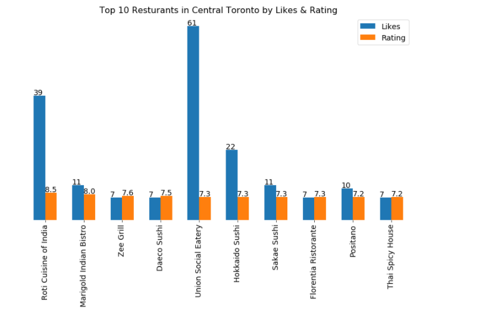
North York
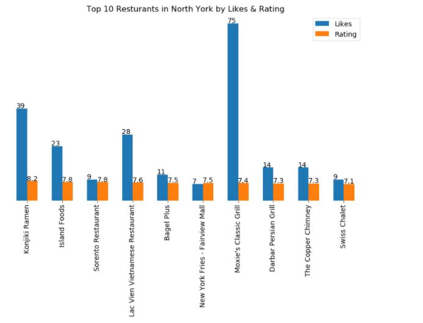
Scarborough
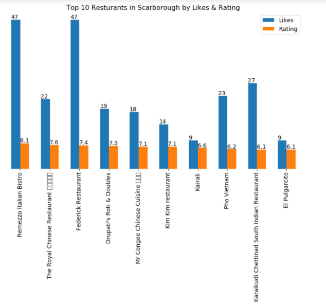
East York
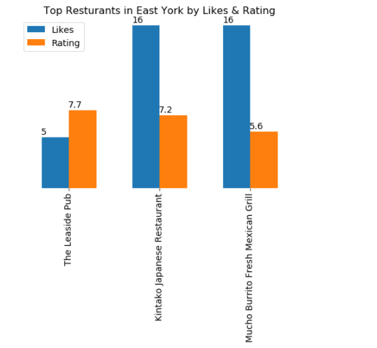
Etobicoke
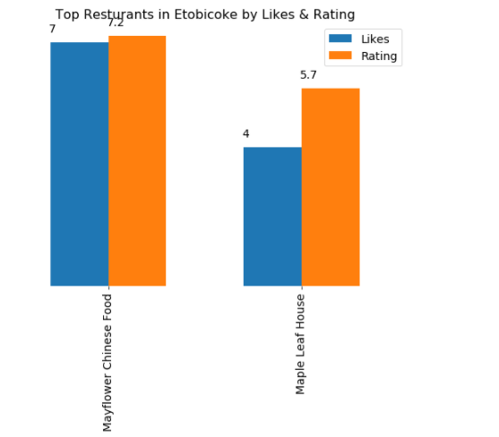
All top/top 10 restaurants on the map
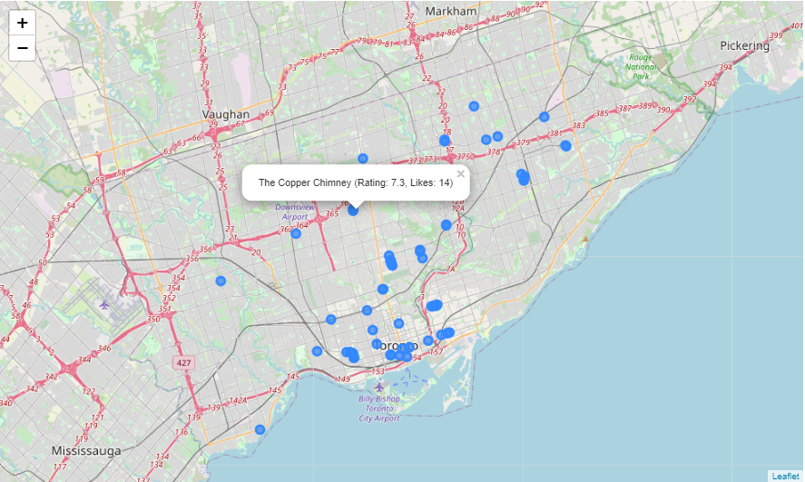
Discussion
The purpose of this project is to find Top 10 Restauarants in 8 Boroughs of Toronto by Rating and Likes using Foursquare API. For some boroughs, there are less than 10 restaurants. This is a drawback.
Toronto itself varies in culture. It attracts millions of people every year. Further analysis should be made.
It would be interesting to use different API to explore more.
Base on Foursquare API, although it is not complete, this might give us a pretty good idea of restaurants in Toronto and its boroughs. The reason is the data is based on people.
Conclusion
Starting by introducing of problem, then describe needed data, walkthrough methodology, get the results, and finally the discussion of whether the project is helpful. I hope this gives help target audiens in deciding of choosing restaurants in each boroughs and Toronto overall.
Future Work
- Try different API
- Discover top restaurants in different category (Italian, Japanese...)
- find out, overall, which borough has better restaurants (Likes and Rating)
- Examine tip(review) from user